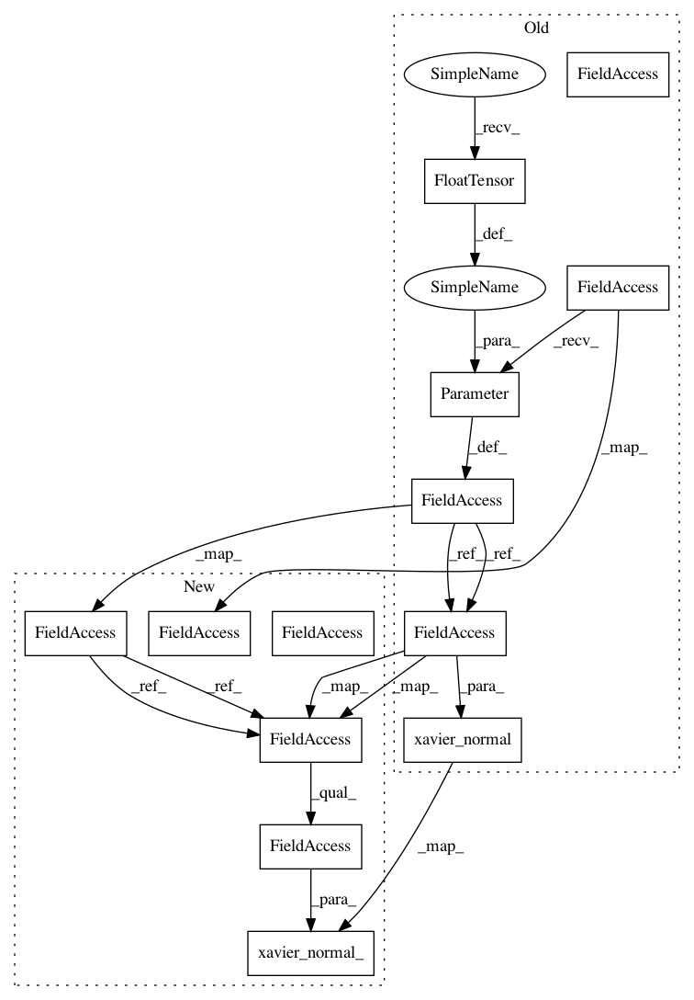

7d7aed37d843059248aeb3682331e92d2f019540,transformer/SubLayers.py,MultiHeadAttention,__init__,#MultiHeadAttention#,16
Before Change
self.d_v = d_v
self.w_qs = nn.Parameter(torch.FloatTensor(n_head, d_model, d_k))
self.w_ks = nn.Parameter(torch.FloatTensor(n_head, d_model, d_k))
self.w_vs = nn.Parameter(torch.FloatTensor(n_head, d_model, d_v))
self.attention = ScaledDotProductAttention(d_model)
self.layer_norm = LayerNormalization(d_model)
self.proj = Linear(n_head*d_v, d_model)
self.dropout = nn.Dropout(dropout)
init.xavier_normal(self.w_qs)
init.xavier_normal(self.w_ks)
init.xavier_normal(self.w_vs)
def forward(self, q, k, v, attn_mask=None):
After Change
self.d_v = d_v
self.w_qs = nn.Linear(d_model, n_head * d_k)
self.w_ks = nn.Linear(d_model, n_head * d_k)
self.w_vs = nn.Linear(d_model, n_head * d_v)
nn.init.xavier_normal_(self.w_qs.weight)
nn.init.xavier_normal_(self.w_ks.weight)
nn.init.xavier_normal_(self.w_vs.weight)
self.attention = ScaledDotProductAttention(temperature=np.power(d_model, 0.5))
self.layer_norm = LayerNormalization(d_model)
In pattern: SUPERPATTERN
Frequency: 3
Non-data size: 13
Instances
Project Name: jadore801120/attention-is-all-you-need-pytorch
Commit Name: 7d7aed37d843059248aeb3682331e92d2f019540
Time: 2018-08-22
Author: yhhuang@nlg.csie.ntu.edu.tw
File Name: transformer/SubLayers.py
Class Name: MultiHeadAttention
Method Name: __init__
Project Name: jadore801120/attention-is-all-you-need-pytorch
Commit Name: 7d7aed37d843059248aeb3682331e92d2f019540
Time: 2018-08-22
Author: yhhuang@nlg.csie.ntu.edu.tw
File Name: transformer/SubLayers.py
Class Name: MultiHeadAttention
Method Name: __init__